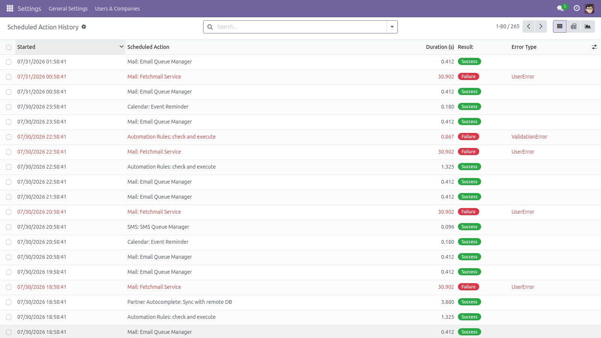
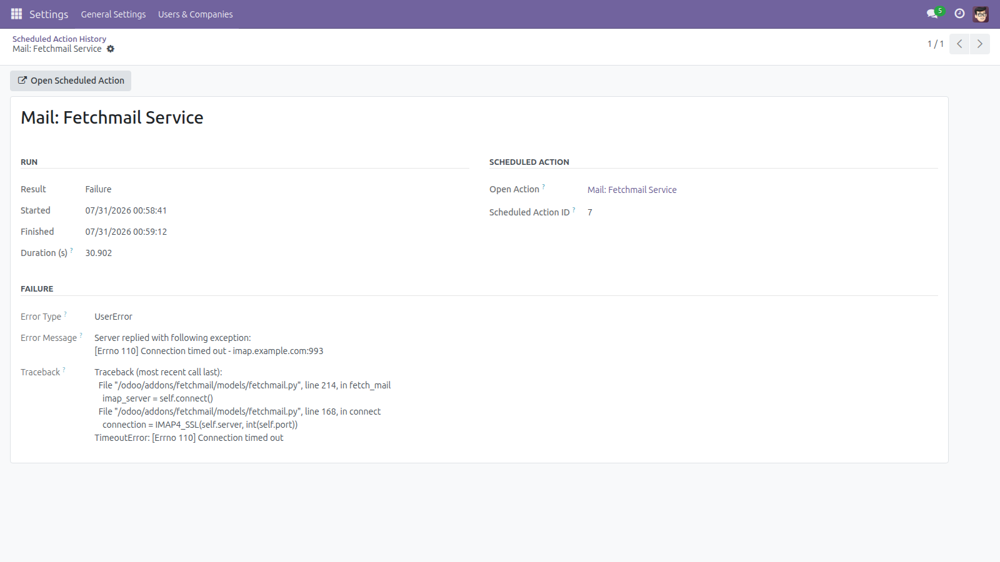
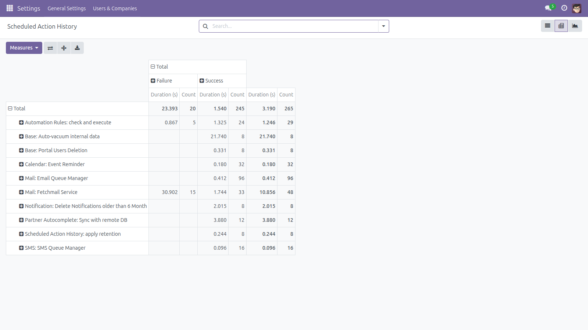
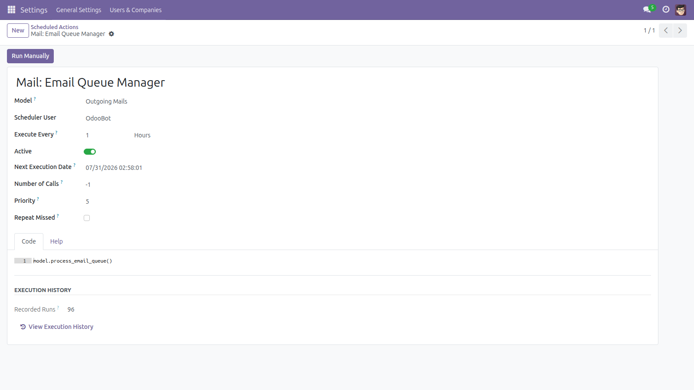
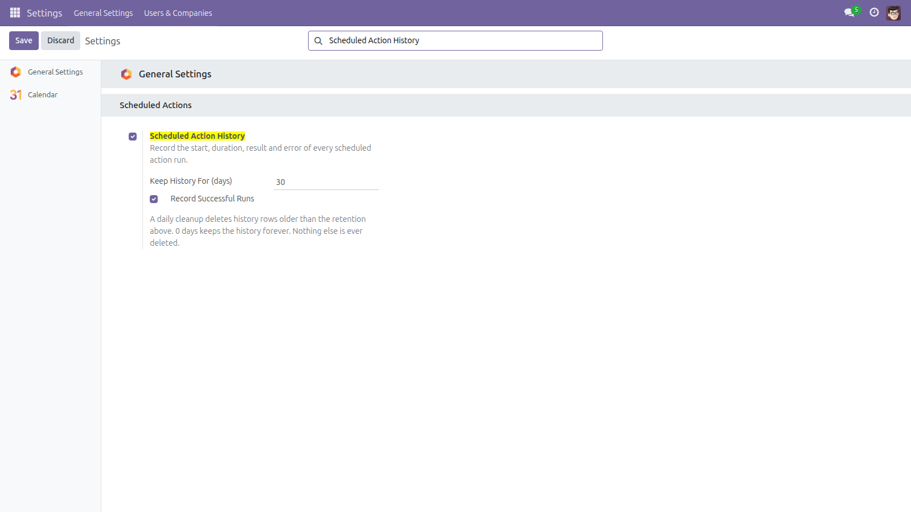

Scheduled Action History
Did last night's job run? How long did it take? Why did it fail?
Odoo keeps no history at all of its scheduled actions. Once a cron has run, the only trace is the server log — if you still have it, and if you can find the right line. This module records every run of every scheduled action: when it started, how long it took, whether it succeeded, and the exact error when it did not.
Free and open source (LGPL-3), Odoo 14.0 through 19.0.
- Every run recorded — start time, end time and duration in seconds, for every scheduled action, automatically.
- Failures with the reason — error type, error message and the Python traceback, stored on the run that failed.
- Failure records survive the failure — a failing cron rolls its own transaction back, so the row is written on a separate database transaction and committed on its own. The evidence is still there after Odoo undoes the job.
- Your jobs are never changed — the recorder wraps Odoo's own per-job hook and hands every exception straight back, so Odoo's error handling and retry behaviour stay exactly as they were. A problem inside the recorder is logged and swallowed; it can never break a job.
- List, pivot and graph — runs per action, average duration and failure count, grouped by action, result, error type or day.
- Link back to the action — open the scheduled action from any run, and see a “Recorded Runs” counter with a direct link on the action form itself.
- Manual runs too — runs started with the Run Manually button are recorded like scheduled ones.
- It cannot grow forever — a retention setting (30 days by default) with a daily cleanup, or 0 days to keep everything.
- Switchable — record failures only, or turn the whole feature off, from Settings.
- Administrator only, and read-only — the history is readable by the Administration / Settings group and by nobody else, and rows cannot be created, edited or deleted from the interface: they leave only through the retention cleanup.
Screenshots

Every run with its duration and result, newest first. Failures are highlighted.

A failed run: error type, error message and traceback, kept even though the job's own transaction was rolled back.

Pivot: number of runs and average duration per scheduled action, split by success and failure.

The scheduled action itself shows how many runs are recorded, with a button that opens just its own history.

Settings: switch recording on or off, keep failures only, and choose how long the history is kept.
Installation
- Copy the module into your addons path, or install it from the Apps list.
- Open Apps, remove the “Apps” filter, search for Scheduled Action History and click Install.
- Only the standard
base and base_setup modules are required.
- Recording starts immediately: the next scheduled action that runs is recorded.
Configuration
- Go to Settings → General Settings → Scheduled Actions.
- Scheduled Action History — on by default. Untick it to stop recording completely.
- Keep History For (days) — 30 by default. A daily cleanup deletes history rows older than this. Set 0 to keep the history forever.
- Record Successful Runs — on by default. Untick it to keep failures only, which makes the history much smaller on a busy database.
- The cleanup is itself a scheduled action (Scheduled Action History: apply retention) and can be paused like any other.
Usage
- Go to Settings → Technical → Automation → Scheduled Action History (developer mode shows the Technical menu).
- The list opens on the most recent runs. Use Failures, Last 24 Hours, Last 7 Days or Slower Than 10s to narrow it down.
- Open a failed run to read the error message and the full traceback.
- Switch to the pivot view for runs per action and average duration, or group by Error Type to see which failure repeats.
- From any scheduled action form, use View Execution History to see only that action's runs.
Good to know
- A run is recorded when the job returns or raises. A job whose worker never reaches that point — killed by a time limit, an out-of-memory kill, a restart — leaves no record even though it did start, and from Odoo 18.0 a job that Odoo itself marks as timed out is likewise not recorded. An absent record therefore means “did not finish”, not always “did not run”.
- The history row is committed on its own database transaction, on purpose: that is what makes a failure record survive the failing job. It also means a recorded run is not undone if you roll something else back.
- Each recorded run briefly borrows one extra database connection. If the connection pool is momentarily full the run is not recorded — the job itself is never affected — and the reason is written to the server log.
- Error messages are stored up to 2 000 characters and tracebacks up to 15 000, marked when truncated, so one very noisy failure cannot bloat the table.
- The run keeps the action's name as it was at the time. Deleting a scheduled action keeps its history — the link back is simply empty; renaming one starts a new name in the grouped views.
- The daily cleanup deletes the oldest expired rows first, in committed batches of 20 000 and at most 500 000 rows per run; anything left goes on the next run. It deletes nothing but this module's own history rows — no scheduled action, log or business record is ever touched.
- Odoo 14.0 – 17.0 handle a job exception inside the per-job hook themselves; 18.0 and 19.0 let it propagate. The module records the failure on every series and never changes which of the two happens.
- From Odoo 18.0 a long job may be executed as several batches. The history records the whole job as one run, with Odoo's own verdict on it, not one row per batch.
- Error messages and tracebacks are stored verbatim and may contain data from the failing job (an integrity error quotes the offending values, a user error quotes record names). The history is readable by the Settings group only.
License: LGPL-3 · Source on GitHub · Issues and contributions welcome.